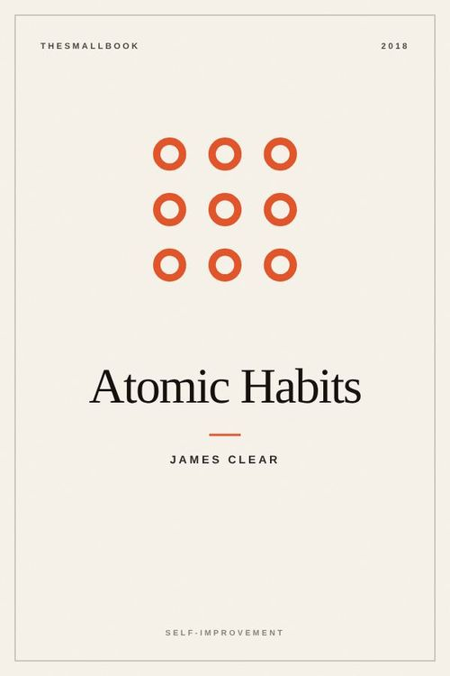

Why Did George Best Fail?
Where the Money Went
📜 What Happened
One of football's greatest talents earned fortunes at Manchester United and delivered history's most honest financial statement: 'I spent a lot of money on booze, birds and fast cars. The rest I just squandered.' The joke was real: bankruptcy in 1982, and a career that peaked at 27 - the talent undone not by rivals but by the lifestyle.
☠️ The Fatal Mistake
Treating self-destruction as personality. The humor was a costume over a compounding collapse nobody interrupted.
🧠 The Lesson (Free for You)
Charm doesn't pay compound interest. The habits you joke about are still compounding - the punchline arrives with interest.
The Antidote Book

You do not rise to the level of your goals - you fall to the level of your systems. Forget massive transformations. Master the art of tiny, repeatable improvements (atomic habits), stack them onto your identity, and…
📖 OPEN THE FULL INTERACTIVE BREAKDOWN →Questions people ask about George Best
Why did George Best fail? Treating self-destruction as personality. The humor was a costume over a compounding collapse nobody interrupted.
How much was lost? Millions - self-audited
What is the lesson? Charm doesn't pay compound interest. The habits you joke about are still compounding - the punchline arrives with interest.
George Best kyun fail hua? In simple English: Treating self-destruction as personality. The humor was a costume over a compounding collapse nobody interrupted. The cost was Millions - self-audited.
Keep digging
More money and market failures · Open the full Graveyard
Read the antidote book summary: Atomic Habits
Related failures
- Why did Republic First Bank fail? 2024 · The smaller echo of 2023
- Why did PaisaBazaar fail? 2024 · India's Biggest Loan Marketplace, Written Down 95%
- Why did Silicon Valley Bank fail? 2023 · The First Bank Run at Twitter Speed
- Why did Signature Bank fail? 2023 · The Crypto Pivot That Sparked a 48-Hour Bank Run
- Why did First Republic Bank fail? 2023 · The Bank That Catered to the Rich - and Died of a Run
- Why did Credit Suisse fail? 2023 · 167 Years of Prestige, Death by a Thousand Scandals
Questions this case answers
Questions people ask about George Best
Why did George Best fail? Treating self-destruction as personality. The humor was a costume over a compounding collapse nobody interrupted.
How much was lost? Millions - self-audited
What is the lesson? Charm doesn't pay compound interest. The habits you joke about are still compounding - the punchline arrives with interest.
George Best kyun fail hua? In simple English: Treating self-destruction as personality. The humor was a costume over a compounding collapse nobody interrupted. The cost was Millions - self-audited.
Keep digging
More money and market failures · Open the full Graveyard
Read the antidote book summary: Atomic Habits
Related failures
- Why did Republic First Bank fail? 2024 · The smaller echo of 2023
- Why did PaisaBazaar fail? 2024 · India's Biggest Loan Marketplace, Written Down 95%
- Why did Silicon Valley Bank fail? 2023 · The First Bank Run at Twitter Speed
- Why did Signature Bank fail? 2023 · The Crypto Pivot That Sparked a 48-Hour Bank Run
- Why did First Republic Bank fail? 2023 · The Bank That Catered to the Rich - and Died of a Run
- Why did Credit Suisse fail? 2023 · 167 Years of Prestige, Death by a Thousand Scandals
Questions this case answers
Searchable, filterable, simple to read - they paid billions; you get the lesson.